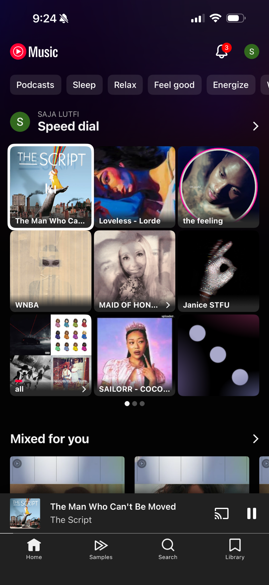
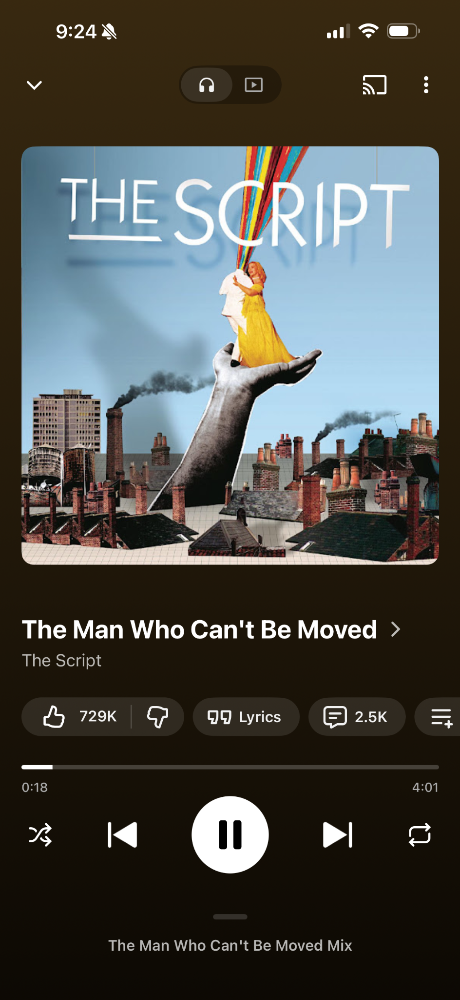

Spotify Jam
Jam launched in September 2023, before the October 2026 prototype shown here. Friends can join remotely, contribute to a shared queue, and see who added each song. The host can manage people and tracks.
Spotify’s Jam announcementI designed a way for friends to listen together from different places, with clear controls for joining, adding songs, and managing playback.


When I studied or worked out with friends, we’d send each other songs or try to press play at the same time. I wanted to see what it would look like to start a shared session in YouTube Music and know who could join, add songs, or skip a track.
Jam launched in September 2023, before the October 2026 prototype shown here. Friends can join remotely, contribute to a shared queue, and see who added each song. The host can manage people and tracks.
Spotify’s Jam announcementFriends can listen in sync and contribute to the queue over FaceTime. Apple also supports host approval for shared-speaker sessions.
SharePlay over FaceTime · SharePlay on speakersI brought request-to-join and separate queue and playback permissions into the same YouTube Music flow. Guests can see those permissions on the invitation before deciding to join.
Private sessions use requests and host approval. Public sessions allow immediate joining. The access rule is visible before joining.
A friend can add a track while the host handles pausing and skipping. Both permissions are visible on the invite and inside the room.
Friends can suggest the next song or heart the current one while they listen.
Interactive prototype with sample tracks and simulated playback.